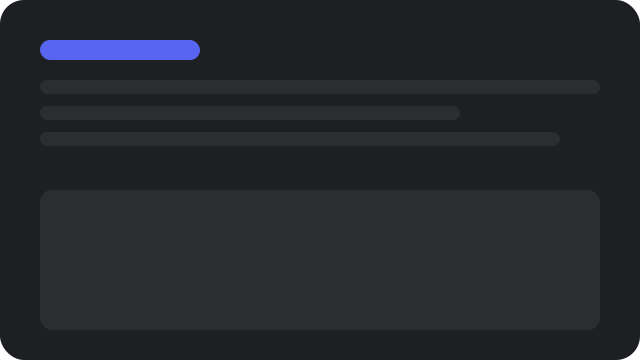

Imagine um lugar...
Organize conversas por texto, voz e vídeo. Crie um espaço por convite onde você se sinta em casa.


Crie um espaço controlado por convite
Monte servidores com canais organizados para cada assunto. Controle quem entra, quem fala e o que acontece.

Aqui é fácil se encontrar
Entre e saia dos canais de voz sem fricção. Veja quem está on-line e entre na conversa com um clique.
Para poucos e para muitos
Funciona para grupos de estudo, guildas e grandes comunidades. Ferramentas de moderação e eventos inclusas.
Tecnologia de conexão confiável
Voz de baixa latência, vídeo nítido e mensagens em tempo real. Infraestrutura distribuída para manter tudo estável.